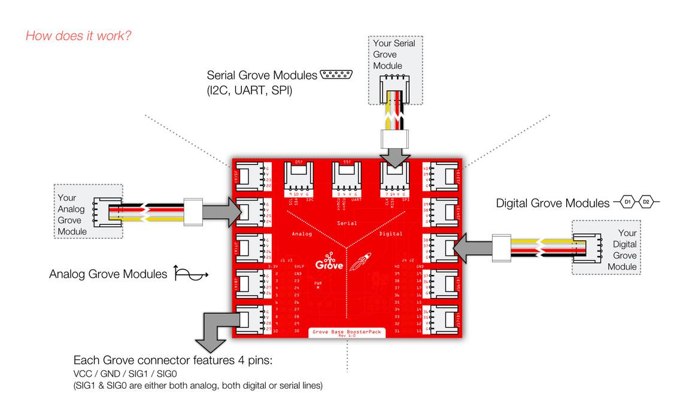
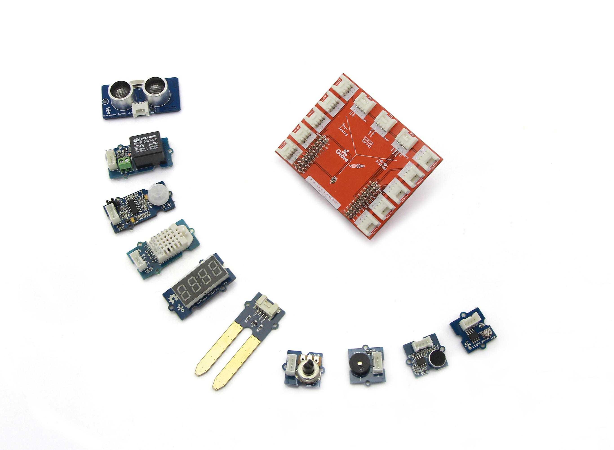
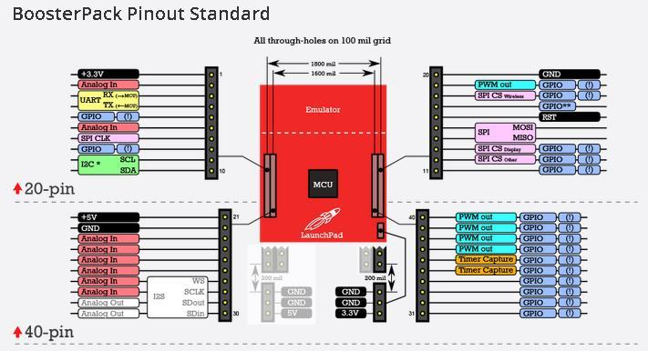

Grove Base BoosterPack
What is Grove Base BoosterPack？
- BoosterPacks are plug-in modules that can stack on top of the various LaunchPad kits to add additional functionality, such as sensors, displays, wireless modules & more. The Grove Base BoosterPack is a welcome addition to the LaunchPad/BoosterPack ecosystem, enabling any LaunchPad to interface with the growing offering of Grove modules from Seeed Studio. The Grove Base BoosterPack offers a convenient and easy way for rapid prototypers to use more than one hundred Grove modules with standardized connectors, including sensors, actuators, displays, lights, motors and more.

What is Grove？
- Grove is a modular, ready-to-use tool set that takes a building block approach to assembling electronics. The Grove system consists of a base shield and a large selection of modules that feature standardized connectors. The base shield allows for easy connection of any microcontroller to interface with the various Grove modules. Each Grove module addresses a unique function & the overall collection of modules expand a wide range of functionality - from a simple push-button to a complex heart rate sensor. Each one comes with clear documentation and demo code to help you get started quickly.

What is LaunchPad？
- The LaunchPad is a set of Evaluation Kits from Texas Instruments. To introduce new functionality to the LaunchPad evaluation kits, we present the BoosterPack which acts as a plug-in board that fit on top of the LaunchPad baseboards. It offers a convenient and easy way for you to use more than one hundred Grove modules with standardized connectors, including sensors, actuators, displays, lights, motors and so on.
Features
- Seeedstudio presents the newly launched Grove Base BoosterPack allowing Texas Instruments Launchpad to be connected closed with our Groves Family,further enabling rapid prototype and combinations with a range of Sensors, actuators,displays,lights,motors and etc.
- The Grove Base BoosterPack has thirteen Groves 4-pin standard interfaces ,including five analog, five digital and three serial port, acting as a plug-n-play expansion module on Launchpad based on MSP430 launchpad.It also provides various of tutorials on how to connect with TI MSP430, there are 11 different kinds of projects for reference prototype ,which offers a convenient way to guide your creativity.
- There is a RED LED on the Grove BoosterPack. It will indicate the power supply.

Using the Grove Base BoosterPack
Using a 40-pin LaunchPad
i.e. MSP-EXP430F5529LP, EK-TM4C123GXL, etc
The BoosterPack was designed in a way to leverage pins in the “inner 20 pins” [21-40]. The pins are connected as shown below in the table:
Using the table below, developers should be able to read an analog value from a Grove module (i.e. potentiometer/turn knob) that is connected to Grove connector ‘J6’ by using the analogRead(24) API call with Energia.
| Connector Type |
Grove connector Label |
GND |
VCC |
SIG1 (connection to the BoosterPack pin) |
SIG0 (connection to the BoosterPack pin) *
|
| Analog |
J5 |
GND |
3.3V |
23 (analog capable pin) |
22 (analog capable pin)
|
| Analog |
J6 |
GND |
3.3V |
25 (analog capable pin) |
24 (analog capable pin)
|
| Analog |
J7 |
GND |
3.3V |
26 (analog capable pin) |
25 (analog capable pin)
|
| Analog |
J8 |
GND |
3.3V |
27 (analog capable pin) |
26 (analog capable pin)
|
| Analog |
J9 |
GND |
3.3V |
28 (analog capable pin) |
27 (analog capable pin)
|
| I2C |
J10 |
GND |
3.3V |
10 (I2C SDA) |
9 (I2C SCL)
|
| UART |
J11 |
GND |
3.3V |
4 (UART to MCU) |
3 (UART from MCU)
|
| SPI |
J12 |
GND |
3.3V |
14 (SPI MISO) |
7 (SPI CLK)
|
| Digital |
J13 |
GND |
3.3V |
39 (Digital/PWM pin) |
40 (Digital/PWM pin)
|
| Digital |
J14 |
GND |
3.3V |
38 (Digital/PWM pin) |
39 (Digital/PWM pin)
|
| Digital |
J15 |
GND |
3.3V |
37 (Digital/PWM pin) |
38 (Digital/PWM pin)
|
| Digital |
J16 |
GND |
3.3V |
36 (Digital/PWM pin) |
37 (Digital/PWM pin)
|
| Digital |
J17 |
GND |
3.3V |
35 (Digital/PWM pin) |
36 (Digital/PWM pin)
|
Using a 20-pin LaunchPad
If you are using a 20-pin LaunchPad, you can use jumpers or jumper wire to make the appropriate connections between a Grove connector & the BoosterPack connector.
Using your specific LaunchPad’s pin out diagram, you can physically/electrically connect the Grove module to the appropriate pin. Pinout diagrams for each LaunchPad are available here:
http://energia.nu/pin-maps/
With the help of these pin diagrams, you know which pin has the function you need. If you want to use Grove connector J5 for an analog Grove module (i.e. potentiometer knob), you can use the Energia pin maps to identify an analog-capable pin of the BoosterPack connector. Using a jumper of wire, you can connect pin number 22 with the analog-capable pin that is available. For example, if you are using an MSP-EXP430G2 LaunchPad, you can use a jumper or a cable to connect pin 22 with pin 2.
Supported Products
Grove List
Find the Google doc here
- ---- https://docs.google.com/document/d/1vD3C1WrGj6_sldslygKBayrhjV9vyxVxkiVRCs8r2jQ/edit?usp=sharing
Resources
Hardware eagle files
Grove Starter Kit For LaunchPad User's Manual
Copyright (c) 2008-2016 Seeed Development Limited (
www.seeedstudio.com /
www.seeed.cc)
This static html page was created from http://www.seeedstudio.com/wiki